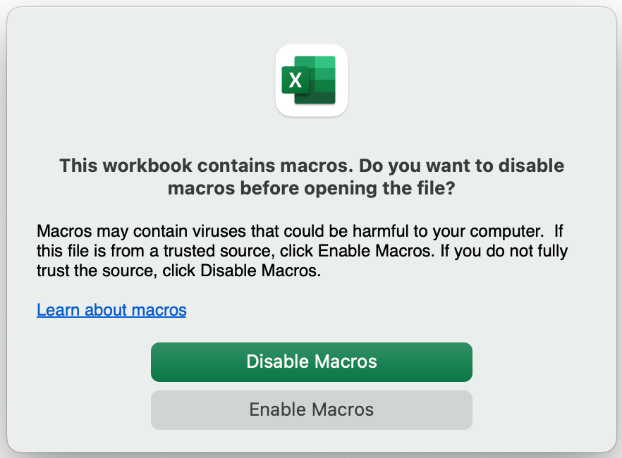

Overview
Starting the software
This software is a spreadsheet built using Microsoft ® Excel with macros used for many of the features and capabilities. The use of macros within a spreadsheet will cause a warning message and prompt the user about there use.

For this software to fully function spreadsheet macros must be enabled. An example of the prompt when starting Retirement Planner using Microsoft ® Excel for Mac. Press the Enable Macros button to continue with all features enabled. Pressing any other button will render the software as none fucntional.
Entering Information
Several pieces of information are needed to create a useful retirement plan. Data must be provided on several tabs in the spreadsheet. Additional information for each tab is provided in the User Interface portion of the documentation.
Home
The Home tab is often used to review the results of the retirement plan. Navigating to other tabs is supported from this tab by clicking the tab name from the associated button in the left-hand side of the tab. Multiple charts and a single report are viewed from this tab. Modifing the rate-of-return, inflation rate, and retirement start year can also be modified from this tab.
By clicking one of the following icons available on the Home tab a chart or report will be created.
Charts and Report Icons
| Icon | Chart/Report | Description |
|---|---|---|
| Lifetime Investments & Assets | Graph financial information from current year to age 100 of the youngest defined individual. | |
| 30 Year Financial | From the first year of retirement chart 30 years of financials. | |
| 30 Year Income | From the first year of retirement chart 30 years of income. | |
| Budget Current & Future | One or two pie charts providing the breakout of categories for the current & future budgets. Also included is a pie chart for the breakout of Required, Optional, and First Year Additional budget needs. | |
| 30 Year Budget Trend | From the first year of retirement chart 30 years of budget needs. | |
| 30 Year Home & Rentals | From the current year chart the appreciation of the home and rental properties if defined. | |
| Checklist Report | Create the checklist report to review and identify any possible concerns or issues with the entered information. |